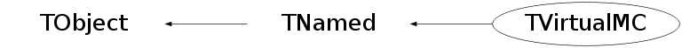

class TVirtualMC: public TNamed
Virtual MC provides a virtual interface to Monte Carlo. It enables the user to build a virtual Monte Carlo application independent of any actual underlying Monte Carlo implementation itself. A user will have to implement a class derived from the abstract Monte Carlo application class, and provide functions like ConstructGeometry(), BeginEvent(), FinishEvent(), ... . The concrete Monte Carlo (Geant3, Geant4) is selected at run time - when processing a ROOT macro where the concrete Monte Carlo is instantiated.
Function Members (Methods)
This is an abstract class, constructors will not be documented.
Look at the header to check for available constructors.
public:
| virtual | ~TVirtualMC() |
| void | TObject::AbstractMethod(const char* method) const |
| virtual void | TObject::AppendPad(Option_t* option = "") |
| virtual void | TObject::Browse(TBrowser* b) |
| virtual void | BuildPhysics() |
| static TClass* | Class() |
| virtual const char* | TObject::ClassName() const |
| virtual void | TNamed::Clear(Option_t* option = "") |
| virtual TObject* | TNamed::Clone(const char* newname = "") const |
| virtual Int_t | TNamed::Compare(const TObject* obj) const |
| virtual void | TNamed::Copy(TObject& named) const |
| virtual Bool_t | CurrentBoundaryNormal(Double_t& x, Double_t& y, Double_t& z) const |
| virtual Int_t | CurrentEvent() const |
| virtual Int_t | CurrentMaterial(Float_t& a, Float_t& z, Float_t& dens, Float_t& radl, Float_t& absl) const |
| virtual Int_t | CurrentMedium() const |
| virtual Int_t | CurrentVolID(Int_t& copyNo) const |
| virtual const char* | CurrentVolName() const |
| virtual Int_t | CurrentVolOffID(Int_t off, Int_t& copyNo) const |
| virtual const char* | CurrentVolOffName(Int_t off) const |
| virtual const char* | CurrentVolPath() |
| virtual Bool_t | DefineIon(const char* name, Int_t Z, Int_t A, Int_t Q, Double_t excEnergy, Double_t mass = 0.) |
| virtual void | DefineOpSurface(const char* name, EMCOpSurfaceModel model, EMCOpSurfaceType surfaceType, EMCOpSurfaceFinish surfaceFinish, Double_t sigmaAlpha) |
| virtual Bool_t | DefineParticle(Int_t pdg, const char* name, TMCParticleType mcType, Double_t mass, Double_t charge, Double_t lifetime) |
| virtual Bool_t | DefineParticle(Int_t pdg, const char* name, TMCParticleType mcType, Double_t mass, Double_t charge, Double_t lifetime, const TString& pType, Double_t width, Int_t iSpin, Int_t iParity, Int_t iConjugation, Int_t iIsospin, Int_t iIsospinZ, Int_t gParity, Int_t lepton, Int_t baryon, Bool_t stable, Bool_t shortlived = kFALSE, const TString& subType = "", Int_t antiEncoding = 0, Double_t magMoment = 0.0, Double_t excitation = 0.0) |
| virtual void | TObject::Delete(Option_t* option = "")MENU |
| virtual Int_t | TObject::DistancetoPrimitive(Int_t px, Int_t py) |
| virtual void | TObject::Draw(Option_t* option = "") |
| virtual void | TObject::DrawClass() constMENU |
| virtual TObject* | TObject::DrawClone(Option_t* option = "") constMENU |
| virtual void | TObject::Dump() constMENU |
| virtual Double_t | Edep() const |
| virtual void | TObject::Error(const char* method, const char* msgfmt) const |
| virtual Double_t | Etot() const |
| virtual void | TObject::Execute(const char* method, const char* params, Int_t* error = 0) |
| virtual void | TObject::Execute(TMethod* method, TObjArray* params, Int_t* error = 0) |
| virtual void | TObject::ExecuteEvent(Int_t event, Int_t px, Int_t py) |
| virtual void | TObject::Fatal(const char* method, const char* msgfmt) const |
| virtual void | TNamed::FillBuffer(char*& buffer) |
| virtual TObject* | TObject::FindObject(const char* name) const |
| virtual TObject* | TObject::FindObject(const TObject* obj) const |
| virtual void | ForceDecayTime(Float_t) |
| virtual void | Gckmat(Int_t imed, char* name) |
| virtual void | Gdtom(Float_t* xd, Float_t* xm, Int_t iflag) |
| virtual void | Gdtom(Double_t* xd, Double_t* xm, Int_t iflag) |
| virtual TVirtualMCDecayer* | GetDecayer() const |
| virtual Option_t* | TObject::GetDrawOption() const |
| static Long_t | TObject::GetDtorOnly() |
| virtual const char* | TObject::GetIconName() const |
| virtual TVirtualMagField* | GetMagField() const |
| virtual Bool_t | GetMaterial(Int_t imat, TString& name, Double_t& a, Double_t& z, Double_t& density, Double_t& radl, Double_t& inter, TArrayD& par) |
| virtual Bool_t | GetMaterial(const TString& volumeName, TString& name, Int_t& imat, Double_t& a, Double_t& z, Double_t& density, Double_t& radl, Double_t& inter, TArrayD& par) |
| virtual Int_t | GetMaxNStep() const |
| static TVirtualMC* | GetMC() |
| virtual Bool_t | GetMedium(const TString& volumeName, TString& name, Int_t& imed, Int_t& nmat, Int_t& isvol, Int_t& ifield, Double_t& fieldm, Double_t& tmaxfd, Double_t& stemax, Double_t& deemax, Double_t& epsil, Double_t& stmin, TArrayD& par) |
| virtual const char* | TNamed::GetName() const |
| virtual char* | TObject::GetObjectInfo(Int_t px, Int_t py) const |
| static Bool_t | TObject::GetObjectStat() |
| virtual Option_t* | TObject::GetOption() const |
| virtual TRandom* | GetRandom() const |
| virtual void | GetSecondary(Int_t isec, Int_t& particleId, TLorentzVector& position, TLorentzVector& momentum) |
| virtual Bool_t | GetShape(const TString& volumePath, TString& shapeType, TArrayD& par) |
| virtual TVirtualMCStack* | GetStack() const |
| virtual const char* | TNamed::GetTitle() const |
| virtual Bool_t | GetTransformation(const TString& volumePath, TGeoHMatrix& matrix) |
| virtual UInt_t | TObject::GetUniqueID() const |
| virtual void | Gfmate(Int_t imat, char* name, Float_t& a, Float_t& z, Float_t& dens, Float_t& radl, Float_t& absl, Float_t* ubuf, Int_t& nbuf) |
| virtual void | Gfmate(Int_t imat, char* name, Double_t& a, Double_t& z, Double_t& dens, Double_t& radl, Double_t& absl, Double_t* ubuf, Int_t& nbuf) |
| virtual void | Gmtod(Float_t* xm, Float_t* xd, Int_t iflag) |
| virtual void | Gmtod(Double_t* xm, Double_t* xd, Int_t iflag) |
| virtual void | Gsbool(const char* onlyVolName, const char* manyVolName) |
| virtual void | Gsdvn(const char* name, const char* mother, Int_t ndiv, Int_t iaxis) |
| virtual void | Gsdvn2(const char* name, const char* mother, Int_t ndiv, Int_t iaxis, Double_t c0i, Int_t numed) |
| virtual void | Gsdvt(const char* name, const char* mother, Double_t step, Int_t iaxis, Int_t numed, Int_t ndvmx) |
| virtual void | Gsdvt2(const char* name, const char* mother, Double_t step, Int_t iaxis, Double_t c0, Int_t numed, Int_t ndvmx) |
| virtual void | Gsord(const char* name, Int_t iax) |
| virtual void | Gspos(const char* name, Int_t nr, const char* mother, Double_t x, Double_t y, Double_t z, Int_t irot, const char* konly = "ONLY") |
| virtual void | Gsposp(const char* name, Int_t nr, const char* mother, Double_t x, Double_t y, Double_t z, Int_t irot, const char* konly, Float_t* upar, Int_t np) |
| virtual void | Gsposp(const char* name, Int_t nr, const char* mother, Double_t x, Double_t y, Double_t z, Int_t irot, const char* konly, Double_t* upar, Int_t np) |
| virtual void | Gstpar(Int_t itmed, const char* param, Double_t parval) |
| virtual Int_t | Gsvolu(const char* name, const char* shape, Int_t nmed, Float_t* upar, Int_t np) |
| virtual Int_t | Gsvolu(const char* name, const char* shape, Int_t nmed, Double_t* upar, Int_t np) |
| virtual Bool_t | TObject::HandleTimer(TTimer* timer) |
| virtual ULong_t | TNamed::Hash() const |
| virtual Int_t | IdFromPDG(Int_t pdg) const |
| virtual void | TObject::Info(const char* method, const char* msgfmt) const |
| virtual Bool_t | TObject::InheritsFrom(const char* classname) const |
| virtual Bool_t | TObject::InheritsFrom(const TClass* cl) const |
| virtual void | Init() |
| virtual void | InitLego() |
| virtual void | TObject::Inspect() constMENU |
| void | TObject::InvertBit(UInt_t f) |
| virtual TClass* | IsA() const |
| virtual Bool_t | IsCollectTracks() const |
| virtual Bool_t | TObject::IsEqual(const TObject* obj) const |
| virtual Bool_t | TObject::IsFolder() const |
| virtual Bool_t | IsNewTrack() const |
| Bool_t | TObject::IsOnHeap() const |
| virtual Bool_t | IsRootGeometrySupported() const |
| virtual Bool_t | TNamed::IsSortable() const |
| virtual Bool_t | IsTrackAlive() const |
| virtual Bool_t | IsTrackDisappeared() const |
| virtual Bool_t | IsTrackEntering() const |
| virtual Bool_t | IsTrackExiting() const |
| virtual Bool_t | IsTrackInside() const |
| virtual Bool_t | IsTrackOut() const |
| virtual Bool_t | IsTrackStop() const |
| Bool_t | TObject::IsZombie() const |
| virtual void | TNamed::ls(Option_t* option = "") const |
| virtual void | Material(Int_t& kmat, const char* name, Double_t a, Double_t z, Double_t dens, Double_t radl, Double_t absl, Float_t* buf, Int_t nwbuf) |
| virtual void | Material(Int_t& kmat, const char* name, Double_t a, Double_t z, Double_t dens, Double_t radl, Double_t absl, Double_t* buf, Int_t nwbuf) |
| virtual void | Matrix(Int_t& krot, Double_t thetaX, Double_t phiX, Double_t thetaY, Double_t phiY, Double_t thetaZ, Double_t phiZ) |
| virtual Double_t | MaxStep() const |
| void | TObject::MayNotUse(const char* method) const |
| virtual void | Medium(Int_t& kmed, const char* name, Int_t nmat, Int_t isvol, Int_t ifield, Double_t fieldm, Double_t tmaxfd, Double_t stemax, Double_t deemax, Double_t epsil, Double_t stmin, Float_t* ubuf, Int_t nbuf) |
| virtual void | Medium(Int_t& kmed, const char* name, Int_t nmat, Int_t isvol, Int_t ifield, Double_t fieldm, Double_t tmaxfd, Double_t stemax, Double_t deemax, Double_t epsil, Double_t stmin, Double_t* ubuf, Int_t nbuf) |
| virtual Int_t | MediumId(const char* mediumName) const |
| virtual void | Mixture(Int_t& kmat, const char* name, Float_t* a, Float_t* z, Double_t dens, Int_t nlmat, Float_t* wmat) |
| virtual void | Mixture(Int_t& kmat, const char* name, Double_t* a, Double_t* z, Double_t dens, Int_t nlmat, Double_t* wmat) |
| virtual Int_t | NofVolDaughters(const char* volName) const |
| virtual Int_t | NofVolumes() const |
| virtual Bool_t | TObject::Notify() |
| virtual Int_t | NSecondaries() const |
| void | TObject::Obsolete(const char* method, const char* asOfVers, const char* removedFromVers) const |
| static void | TObject::operator delete(void* ptr) |
| static void | TObject::operator delete(void* ptr, void* vp) |
| static void | TObject::operator delete[](void* ptr) |
| static void | TObject::operator delete[](void* ptr, void* vp) |
| void* | TObject::operator new(size_t sz) |
| void* | TObject::operator new(size_t sz, void* vp) |
| void* | TObject::operator new[](size_t sz) |
| void* | TObject::operator new[](size_t sz, void* vp) |
| virtual void | TObject::Paint(Option_t* option = "") |
| virtual Double_t | ParticleCharge(Int_t pdg) const |
| virtual Double_t | ParticleLifeTime(Int_t pdg) const |
| virtual Double_t | ParticleMass(Int_t pdg) const |
| virtual TMCParticleType | ParticleMCType(Int_t pdg) const |
| virtual TString | ParticleName(Int_t pdg) const |
| virtual Int_t | PDGFromId(Int_t id) const |
| virtual void | TObject::Pop() |
| virtual void | TNamed::Print(Option_t* option = "") const |
| virtual void | ProcessEvent() |
| virtual Bool_t | ProcessRun(Int_t nevent) |
| virtual TMCProcess | ProdProcess(Int_t isec) const |
| virtual Int_t | TObject::Read(const char* name) |
| virtual void | TObject::RecursiveRemove(TObject* obj) |
| void | TObject::ResetBit(UInt_t f) |
| virtual void | TObject::SaveAs(const char* filename = "", Option_t* option = "") constMENU |
| virtual void | TObject::SavePrimitive(ostream& out, Option_t* option = "") |
| virtual Bool_t | SecondariesAreOrdered() const |
| void | TObject::SetBit(UInt_t f) |
| void | TObject::SetBit(UInt_t f, Bool_t set) |
| virtual void | SetBorderSurface(const char* name, const char* vol1Name, int vol1CopyNo, const char* vol2Name, int vol2CopyNo, const char* opSurfaceName) |
| virtual void | SetCerenkov(Int_t itmed, Int_t npckov, Float_t* ppckov, Float_t* absco, Float_t* effic, Float_t* rindex) |
| virtual void | SetCerenkov(Int_t itmed, Int_t npckov, Double_t* ppckov, Double_t* absco, Double_t* effic, Double_t* rindex) |
| virtual void | SetCollectTracks(Bool_t collectTracks) |
| virtual Bool_t | SetCut(const char* cutName, Double_t cutValue) |
| virtual Bool_t | SetDecayMode(Int_t pdg, Float_t* bratio, Int_t** mode) |
| virtual void | TObject::SetDrawOption(Option_t* option = "")MENU |
| static void | TObject::SetDtorOnly(void* obj) |
| virtual void | SetExternalDecayer(TVirtualMCDecayer* decayer) |
| virtual void | SetMagField(TVirtualMagField* field) |
| virtual void | SetMaterialProperty(Int_t itmed, const char* propertyName, Double_t value) |
| virtual void | SetMaterialProperty(Int_t itmed, const char* propertyName, Int_t np, Double_t* pp, Double_t* values) |
| virtual void | SetMaterialProperty(const char* surfaceName, const char* propertyName, Int_t np, Double_t* pp, Double_t* values) |
| virtual void | SetMaxNStep(Int_t) |
| virtual void | SetMaxStep(Double_t) |
| virtual void | TNamed::SetName(const char* name)MENU |
| virtual void | TNamed::SetNameTitle(const char* name, const char* title) |
| static void | TObject::SetObjectStat(Bool_t stat) |
| virtual Bool_t | SetProcess(const char* flagName, Int_t flagValue) |
| virtual void | SetRandom(TRandom* random) |
| virtual void | SetRootGeometry() |
| virtual void | SetSkinSurface(const char* name, const char* volName, const char* opSurfaceName) |
| virtual void | SetStack(TVirtualMCStack* stack) |
| virtual void | TNamed::SetTitle(const char* title = "")MENU |
| virtual void | TObject::SetUniqueID(UInt_t uid) |
| virtual void | SetUserDecay(Int_t pdg) |
| virtual void | SetUserParameters(Bool_t isUserParameters) |
| virtual void | ShowMembers(TMemberInspector& insp) |
| virtual Int_t | TNamed::Sizeof() const |
| virtual Int_t | StepProcesses(TArrayI& proc) const |
| virtual void | StopEvent() |
| virtual void | StopRun() |
| virtual void | StopTrack() |
| virtual void | Streamer(TBuffer& b) |
| void | StreamerNVirtual(TBuffer& b) |
| virtual void | TObject::SysError(const char* method, const char* msgfmt) const |
| Bool_t | TObject::TestBit(UInt_t f) const |
| Int_t | TObject::TestBits(UInt_t f) const |
| virtual Double_t | TrackCharge() const |
| virtual Double_t | TrackLength() const |
| virtual Double_t | TrackMass() const |
| virtual void | TrackMomentum(TLorentzVector& momentum) const |
| virtual void | TrackMomentum(Double_t& px, Double_t& py, Double_t& pz, Double_t& etot) const |
| virtual Int_t | TrackPid() const |
| virtual void | TrackPosition(TLorentzVector& position) const |
| virtual void | TrackPosition(Double_t& x, Double_t& y, Double_t& z) const |
| virtual Double_t | TrackStep() const |
| virtual Double_t | TrackTime() const |
| virtual void | TObject::UseCurrentStyle() |
| virtual Int_t | VolDaughterCopyNo(const char* volName, Int_t i) const |
| virtual const char* | VolDaughterName(const char* volName, Int_t i) const |
| virtual Int_t | VolId(const char* volName) const |
| virtual Int_t | VolId2Mate(Int_t id) const |
| virtual const char* | VolName(Int_t id) const |
| virtual void | TObject::Warning(const char* method, const char* msgfmt) const |
| virtual Int_t | TObject::Write(const char* name = 0, Int_t option = 0, Int_t bufsize = 0) |
| virtual Int_t | TObject::Write(const char* name = 0, Int_t option = 0, Int_t bufsize = 0) const |
| virtual void | WriteEuclid(const char* filnam, const char* topvol, Int_t number, Int_t nlevel) |
| virtual Double_t | Xsec(char*, Double_t, Int_t, Int_t) |
protected:
| virtual void | TObject::DoError(int level, const char* location, const char* fmt, va_list va) const |
| void | TObject::MakeZombie() |
private:
| TVirtualMC& | operator=(const TVirtualMC&) |
Data Members
public:
| enum TObject::EStatusBits { | kCanDelete | |
| kMustCleanup | ||
| kObjInCanvas | ||
| kIsReferenced | ||
| kHasUUID | ||
| kCannotPick | ||
| kNoContextMenu | ||
| kInvalidObject | ||
| }; | ||
| enum TObject::[unnamed] { | kIsOnHeap | |
| kNotDeleted | ||
| kZombie | ||
| kBitMask | ||
| kSingleKey | ||
| kOverwrite | ||
| kWriteDelete | ||
| }; |
protected:
| TVirtualMCApplication* | fApplication | ! User MC application |
| TString | TNamed::fName | object identifier |
| TString | TNamed::fTitle | object title |
private:
| TVirtualMCDecayer* | fDecayer | ! External decayer |
| TVirtualMagField* | fMagField | ! Magnetic field |
| TRandom* | fRandom | ! Random number generator |
| TVirtualMCStack* | fStack | ! Particles stack |
| static TVirtualMC* | fgMC | Monte Carlo singleton instance |
Class Charts
{kind=link}
{kind=link}
{kind=link}
{kind=link}

Function documentation
Bool_t CurrentBoundaryNormal(Double_t& x, Double_t& y, Double_t& z) const
Bool_t GetMaterial(Int_t imat, TString& name, Double_t& a, Double_t& z, Double_t& density, Double_t& radl, Double_t& inter, TArrayD& par)
Return the material parameters for the material specified by the material Id
Bool_t IsRootGeometrySupported() const
methods for building/management of geometry Info about supporting geometry defined via Root
{ return kFALSE; }void Gfmate(Int_t imat, char* name, Float_t& a, Float_t& z, Float_t& dens, Float_t& radl, Float_t& absl, Float_t* ubuf, Int_t& nbuf)
make this function =0 with next release functions from GCONS Return parameters for material specified by material number imat Deprecated - replaced with GetMaterial()
void Gckmat(Int_t imed, char* name)
Return parameters for material specified by material number imat (in double precision) Deprecated - replaced with GetMaterial() Check the parameters of a tracking medium Deprecated
void Material(Int_t& kmat, const char* name, Double_t a, Double_t z, Double_t dens, Double_t radl, Double_t absl, Float_t* buf, Int_t nwbuf)
Define a material
kmat number assigned to the material
name material name
a atomic mass in au
z atomic number
dens density in g/cm3
absl absorption length in cm;
if >=0 it is ignored and the program
calculates it, if <0. -absl is taken
radl radiation length in cm
if >=0 it is ignored and the program
calculates it, if <0. -radl is taken
buf pointer to an array of user words
nwbuf number of user words
void Mixture(Int_t& kmat, const char* name, Float_t* a, Float_t* z, Double_t dens, Int_t nlmat, Float_t* wmat)
The same as previous but in double precision Define mixture or compound with a number kmat composed by the basic nlmat materials defined by arrays a, z and wmat If nlmat > 0 then wmat contains the proportion by weights of each basic material in the mixture. If nlmat < 0 then wmat contains the number of atoms of a given kind into the molecule of the compound. In this case, wmat in output is changed to relative weights.
void Medium(Int_t& kmed, const char* name, Int_t nmat, Int_t isvol, Int_t ifield, Double_t fieldm, Double_t tmaxfd, Double_t stemax, Double_t deemax, Double_t epsil, Double_t stmin, Float_t* ubuf, Int_t nbuf)
The same as previous but in double precision Define a medium. kmed tracking medium number assigned name tracking medium name nmat material number isvol sensitive volume flag ifield magnetic field: - ifield = 0 if no magnetic field; - ifield = -1 if user decision in guswim; - ifield = 1 if tracking performed with g3rkuta; - ifield = 2 if tracking performed with g3helix; - ifield = 3 if tracking performed with g3helx3. fieldm max. field value (kilogauss) tmaxfd max. angle due to field (deg/step) stemax max. step allowed deemax max. fraction of energy lost in a step epsil tracking precision (cm) stmin min. step due to continuous processes (cm) ubuf pointer to an array of user words nbuf number of user words
void Matrix(Int_t& krot, Double_t thetaX, Double_t phiX, Double_t thetaY, Double_t phiY, Double_t thetaZ, Double_t phiZ)
The same as previous but in double precision Define a rotation matrix krot rotation matrix number assigned thetaX polar angle for axis X phiX azimuthal angle for axis X thetaY polar angle for axis Y phiY azimuthal angle for axis Y thetaZ polar angle for axis Z phiZ azimuthal angle for axis Z
Int_t Gsvolu(const char* name, const char* shape, Int_t nmed, Float_t* upar, Int_t np)
Change the value of cut or mechanism param to a new value parval for tracking medium itmed. In Geant3, the data structure JTMED contains the standard tracking parameters (CUTS and flags to control the physics processes) which are used by default for all tracking media. It is possible to redefine individually with this function any of these parameters for a given tracking medium. itmed tracking medium number param is a character string (variable name) parval must be given as a floating point. functions from GGEOM Create a new volume name Volume name shape Volume type nmed Tracking medium number np Number of shape parameters upar Vector containing shape parameters
void Gsdvn(const char* name, const char* mother, Int_t ndiv, Int_t iaxis)
The same as previous but in double precision Create a new volume by dividing an existing one. It divides a previously defined volume name Volume name mother Mother volume name ndiv Number of divisions iaxis Axis value: X,Y,Z of CAXIS will be translated to 1,2,3 for IAXIS.
void Gsdvt(const char* name, const char* mother, Double_t step, Int_t iaxis, Int_t numed, Int_t ndvmx)
Create a new volume by dividing an existing one. Divide mother into ndiv divisions called name along axis iaxis starting at coordinate value c0i. The new volume created will be medium number numed. Create a new volume by dividing an existing one Divide mother into divisions called name along axis iaxis in steps of step. If not exactly divisible will make as many as possible and will center them with respect to the mother. Divisions will have medium number numed. If numed is 0, numed of mother is taken. ndvmx is the expected maximum number of divisions (If 0, no protection tests are performed in Geant3)
void Gsord(const char* name, Int_t iax)
Create a new volume by dividing an existing one Divides mother into divisions called name along axis iaxis starting at coordinate value c0 with step size step. The new volume created will have medium number numed. If numed is 0, numed of mother is taken. ndvmx is the expected maximum number of divisions (If 0, no protection tests are performed in Geant3) Flag volume name whose contents will have to be ordered along axis iax, by setting the search flag to -iax (Geant3 only)
void Gspos(const char* name, Int_t nr, const char* mother, Double_t x, Double_t y, Double_t z, Int_t irot, const char* konly = "ONLY")
Position a volume into an existing one. It positions a previously defined volume in the mother. name Volume name nr Copy number of the volume mother Mother volume name x X coord. of the volume in mother ref. sys. y Y coord. of the volume in mother ref. sys. z Z coord. of the volume in mother ref. sys. irot Rotation matrix number w.r.t. mother ref. sys. konly ONLY/MANY flag
void Gsposp(const char* name, Int_t nr, const char* mother, Double_t x, Double_t y, Double_t z, Int_t irot, const char* konly, Double_t* upar, Int_t np)
Place a copy of generic volume name with user number nr inside mother, with its parameters upar(1..np) The same as previous but in double precision
void SetCerenkov(Int_t itmed, Int_t npckov, Float_t* ppckov, Float_t* absco, Float_t* effic, Float_t* rindex)
Helper function for resolving MANY.
Specify the ONLY volume that overlaps with the
specified MANY and has to be substracted.
(Geant4 only)
Define the tables for UV photon tracking in medium itmed.
Please note that it is the user's responsibility to
provide all the coefficients:
itmed Tracking medium number
npckov Number of bins of each table
ppckov Value of photon momentum (in GeV)
absco Absorption coefficients
dielectric: absorption length in cm
metals : absorption fraction (0<=x<=1)
effic Detection efficiency for UV photons
rindex Refraction index (if=0 metal)
void DefineOpSurface(const char* name, EMCOpSurfaceModel model, EMCOpSurfaceType surfaceType, EMCOpSurfaceFinish surfaceFinish, Double_t sigmaAlpha)
The same as previous but in double precision functions for definition of surfaces and material properties for optical physics Define the optical surface name surface name model selection of model (see #EMCOpSurfaceModel values) surfaceType surface type (see #EMCOpSurfaceType values) surfaceFinish surface quality (see #EMCOpSurfaceType values) sigmaAlpha an unified model surface parameter (Geant4 only)
void SetSkinSurface(const char* name, const char* volName, const char* opSurfaceName)
Define the optical surface border name border surface name vol1Name first volume name vol1CopyNo first volume copy number vol2Name second volume name vol2CopyNo second volume copy number opSurfaceName name of optical surface which this border belongs to (Geant4 only) Define the optical skin surface name skin surface name volName volume name opSurfaceName name of optical surface which this border belongs to (Geant4 only)
void SetMaterialProperty(Int_t itmed, const char* propertyName, Double_t value)
Define material property via a table of values itmed tracking medium id propertyName property name np number of bins of the table pp value of photon momentum (in GeV) values property values (Geant4 only) Define material property via a value itmed tracking medium id propertyName property name value property value (Geant4 only)
Bool_t GetTransformation(const TString& volumePath, TGeoHMatrix& matrix)
Define optical surface property via a table of values surfaceName optical surface name propertyName property name np number of bins of the table pp value of photon momentum (in GeV) values property values (Geant4 only) functions for access to geometry Return the transformation matrix between the volume specified by the path volumePath and the top or master volume.
Bool_t GetMaterial(Int_t imat, TString& name, Double_t& a, Double_t& z, Double_t& density, Double_t& radl, Double_t& inter, TArrayD& par)
Return the name of the shape (shapeType) and its parameters par for the volume specified by the path volumePath . Return the material parameters for the material specified by the material Id - NEW
Bool_t GetMedium(const TString& volumeName, TString& name, Int_t& imed, Int_t& nmat, Int_t& isvol, Int_t& ifield, Double_t& fieldm, Double_t& tmaxfd, Double_t& stemax, Double_t& deemax, Double_t& epsil, Double_t& stmin, TArrayD& par)
Return the material parameters for the volume specified by the volumeName. Return the medium parameters for the volume specified by the volumeName.
void SetRootGeometry()
Write out the geometry of the detector in EUCLID file format filnam file name - will be with the extension .euc * topvol volume name of the starting node number copy number of topvol (relevant for gsposp) nlevel number of levels in the tree structure to be written out, starting from topvol (Geant3 only) Deprecated Set geometry from Root (built via TGeo)
void SetUserParameters(Bool_t isUserParameters)
Activate the parameters defined in tracking media (DEEMAX, STMIN, STEMAX), which are, be default, ignored. In Geant4 case, only STEMAX is taken into account. In FLUKA, all tracking media parameters are ignored.
Int_t VolId(const char* volName) const
get methods Return the unique numeric identifier for volume name volName
Int_t MediumId(const char* mediumName) const
Return the unique numeric identifier for medium name mediumName
Int_t NofVolDaughters(const char* volName) const
Return number of daughters of the volume specified by volName
const char* VolDaughterName(const char* volName, Int_t i) const
Return the name of i-th daughter of the volume specified by volName
Int_t VolDaughterCopyNo(const char* volName, Int_t i) const
Return the copyNo of i-th daughter of the volume specified by volName
Bool_t SetCut(const char* cutName, Double_t cutValue)
methods for physics management set methods Set transport cuts for particles
Bool_t DefineParticle(Int_t pdg, const char* name, TMCParticleType mcType, Double_t mass, Double_t charge, Double_t lifetime)
Set a user defined particle Function is ignored if particle with specified pdg already exists and error report is printed. pdg PDG encoding name particle name mcType VMC Particle type mass mass [GeV] charge charge [eplus] lifetime time of life [s] pType particle type as in Geant4 width width [GeV] iSpin spin iParity parity iConjugation conjugation iIsospin isospin iIsospinZ isospin - #rd component gParity gParity lepton lepton number baryon baryon number stable stability shortlived is shorlived? subType particle subType as in Geant4 antiEncoding anti encoding magMoment magnetic moment excitation excitation energy [GeV]
Bool_t DefineIon(const char* name, Int_t Z, Int_t A, Int_t Q, Double_t excEnergy, Double_t mass = 0.)
Set a user defined particle
Function is ignored if particle with specified pdg
already exists and error report is printed.
pdg PDG encoding
name particle name
mcType VMC Particle type
mass mass [GeV]
charge charge [eplus]
lifetime time of life [s]
pType particle type as in Geant4
width width [GeV]
iSpin spin
iParity parity
iConjugation conjugation
iIsospin isospin
iIsospinZ isospin - #rd component
gParity gParity
lepton lepton number
baryon baryon number
stable stability
shortlived is shorlived?
subType particle subType as in Geant4
antiEncoding anti encoding
magMoment magnetic moment
excitation excitation energy [GeV]
Set a user defined ion.
name ion name
Z atomic number
A atomic mass
Q charge [eplus}
excitation excitation energy [GeV]
mass mass [GeV] (if not specified by user, approximative
mass is calculated)
Double_t Xsec(char* , Double_t , Int_t , Int_t )
Set a user phase space decay for a particle
pdg particle PDG encoding
bratios the array with branching ratios (in %)
mode[6][3] the array with daughters particles PDG codes for each
decay channel
Calculate X-sections
(Geant3 only)
Deprecated
Int_t IdFromPDG(Int_t pdg) const
particle table usage Return MC specific code from a PDG and pseudo ENDF code (pdg)
Double_t ParticleCharge(Int_t pdg) const
Return charge (in e units) of the particle specified by pdg.
void StopTrack()
methods for step management action methods Stop the transport of the current particle and skip to the next
void SetMaxStep(Double_t )
set methods Set the maximum step allowed till the particle is in the current medium
void SetUserDecay(Int_t pdg)
Force the decays of particles to be done with Pythia and not with the Geant routines.
Int_t CurrentVolID(Int_t& copyNo) const
tracking volume(s) Return the current volume ID and copy number
Int_t CurrentVolOffID(Int_t off, Int_t& copyNo) const
Return the current volume off upward in the geometrical tree ID and copy number
const char* CurrentVolOffName(Int_t off) const
Return the current volume off upward in the geometrical tree name and copy number' if name=0 no name is returned
Int_t CurrentMaterial(Float_t& a, Float_t& z, Float_t& dens, Float_t& radl, Float_t& absl) const
Return the parameters of the current material during transport
Int_t CurrentEvent() const
Return the number of the current medium new function (to replace GetMedium() const) Return the number of the current event
void Gmtod(Float_t* xm, Float_t* xd, Int_t iflag)
Computes coordinates xd in daughter reference system from known coordinates xm in mother reference system. xm coordinates in mother reference system (input) xd coordinates in daughter reference system (output) iflag - IFLAG = 1 convert coordinates - IFLAG = 2 convert direction cosines
void Gdtom(Float_t* xd, Float_t* xm, Int_t iflag)
Computes coordinates xm in mother reference system from known coordinates xd in daughter reference system. xd coordinates in daughter reference system (input) xm coordinates in mother reference system (output) iflag - IFLAG = 1 convert coordinates - IFLAG = 2 convert direction cosines
void TrackPosition(TLorentzVector& position) const
get methods tracking particle dynamic properties Return the current position in the master reference frame of the track being transported
void TrackPosition(Double_t& x, Double_t& y, Double_t& z) const
Return the current position in the master reference frame of the track being transported
void TrackMomentum(TLorentzVector& momentum) const
Return the direction and the momentum (GeV/c) of the track currently being transported
void TrackMomentum(Double_t& px, Double_t& py, Double_t& pz, Double_t& etot) const
Return the direction and the momentum (GeV/c) of the track currently being transported
Int_t TrackPid() const
get methods tracking particle static properties Return the PDG of the particle transported
Bool_t IsNewTrack() const
get methods - track status Return true when the track performs the first step
Bool_t IsTrackEntering() const
Return true if this is the first step of the track in the current volume
Bool_t IsTrackExiting() const
Return true if this is the last step of the track in the current volume
Bool_t IsTrackDisappeared() const
Return true if the current particle has disappeared either because it decayed or because it underwent an inelastic collision
Bool_t IsTrackAlive() const
Return true if the current particle is alive and will continue to be transported
Int_t NSecondaries() const
get methods - secondaries Return the number of secondary particles generated in the current step
void GetSecondary(Int_t isec, Int_t& particleId, TLorentzVector& position, TLorentzVector& momentum)
Return the parameters of the secondary track number isec produced in the current step
Int_t StepProcesses(TArrayI& proc) const
Return the VMC code of the process that has produced the secondary particles in the current step Return the array of the VMC code of the processes active in the current step
Bool_t SecondariesAreOrdered() const
Return the information about the transport order needed by the stack
Bool_t ProcessRun(Int_t nevent)
TVirtualMC & operator=(const TVirtualMC& )